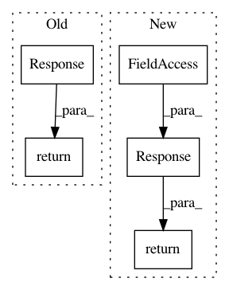

f4fe87292f4a0f4f728969a7615bbd3be39f6c91,polyaxon/api/experiments/views.py,ExperimentLogsView,get,#ExperimentLogsView#Any#,619
Before Change
return response
except FileNotFoundError:
_logger.warning("Log file not found: log_path=%s", log_path)
return Response(status=status.HTTP_404_NOT_FOUND,
data="Log file not found: log_path={}".format(log_path))
def post(self, request, *args, **kwargs):
log_lines = request.data
if not log_lines or not isinstance(log_lines, (str, list)):
After Change
log_path=log_path,
namepath=experiment_name)
elif self.experiment.is_done and self.experiment.is_distributed:
return Response(status=status.HTTP_400_BAD_REQUEST,
data="This experiment is distributed, "
"please check log archives of each job.")
elif self.experiment.in_cluster:
process_logs(experiment=self.experiment, temp=True)
log_path = stores.get_experiment_logs_path(experiment_name=experiment_name, temp=True)
else:
In pattern: SUPERPATTERN
Frequency: 3
Non-data size: 5
Instances
Project Name: polyaxon/polyaxon
Commit Name: f4fe87292f4a0f4f728969a7615bbd3be39f6c91
Time: 2019-02-27
Author: mouradmourafiq@gmail.com
File Name: polyaxon/api/experiments/views.py
Class Name: ExperimentLogsView
Method Name: get
Project Name: AlexsLemonade/refinebio
Commit Name: 90e5fffcd65a786b8344d46246f31f14ecc98dbe
Time: 2018-07-02
Author: willvauclain.dev@gmail.com
File Name: api/data_refinery_api/views.py
Class Name: TranscriptomeIndexDetail
Method Name: get
Project Name: comic/grand-challenge.org
Commit Name: 05a86908b5d9b1c90b7f605ce42827ace81b7445
Time: 2020-01-17
Author: haimasree.diag@gmail.com
File Name: app/grandchallenge/cases/views.py
Class Name: RawImageUploadSessionViewSet
Method Name: process_images